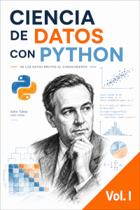
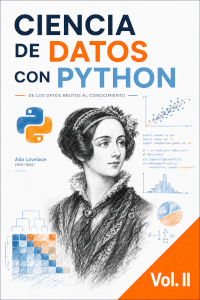
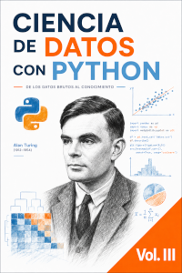

Libro gratuito
Ciencia de Datos con Python · Volumen I
Primeros pasos con datos, DataFrames, selección, filtros, columnas, limpieza y preparación de datasets.
Biblioteca oficial
Algunos PDF pueden circular por la red en versiones anteriores. En esta página vas a encontrar siempre los enlaces actualizados a los libros y materiales publicados por VintaBytes.
Si llegaste desde un PDF, esta página funciona como punto de referencia para consultar si existe una versión más reciente.

Libro gratuito
Primeros pasos con datos, DataFrames, selección, filtros, columnas, limpieza y preparación de datasets.

Libro gratuito
Análisis exploratorio, agrupaciones, visualizaciones, conclusiones e informes breves de análisis de datos.

Libro gratuito
Machine Learning. Modelos, métricas,conclusiones e inferencia usando Python y scikit-learn.
Todos estos materiales se comparten de manera gratuita. Si te resultan útiles, podés colaborar voluntariamente para ayudar a sostener el desarrollo de nuevos recursos.
Ver formas de apoyo